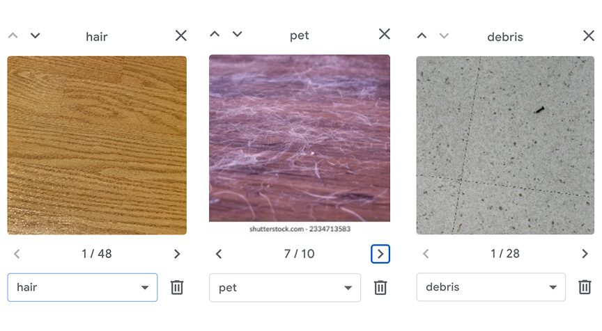
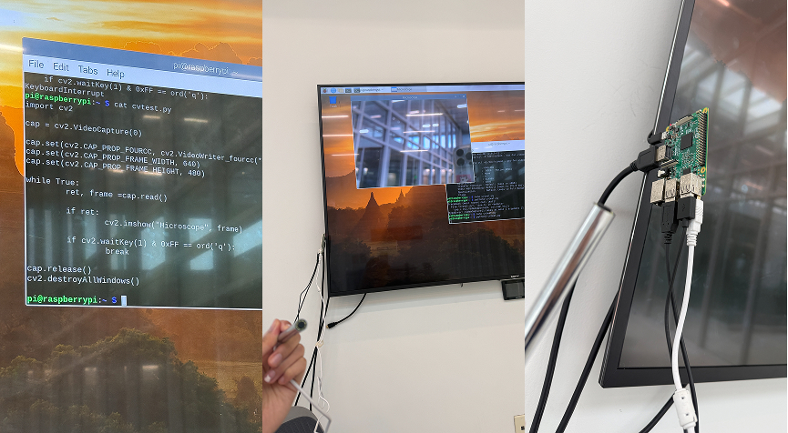
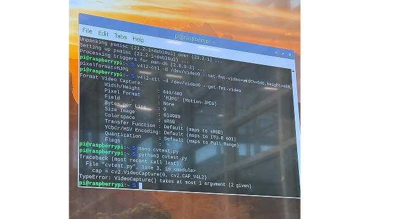
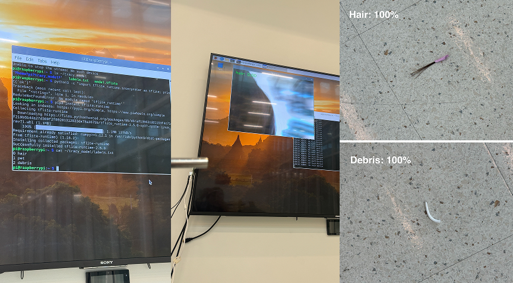
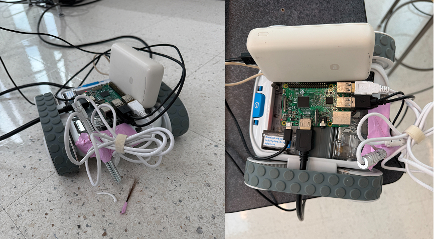
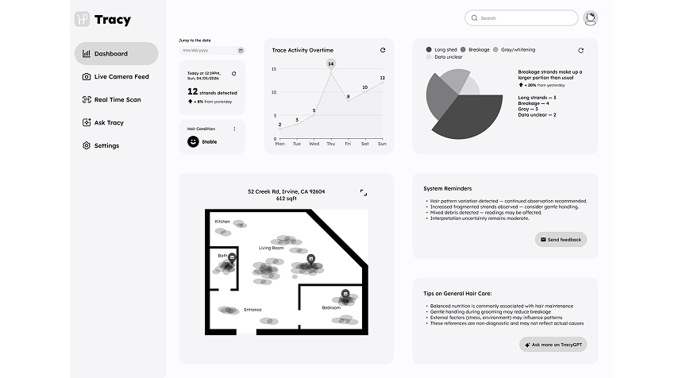
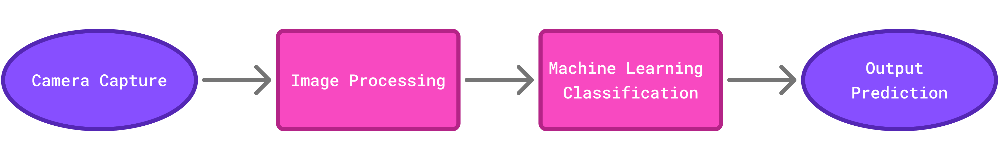

Tracy
Ambient Robotics System Design & Engineering
Project Overview
Tracy is an embodied HRI prototype that uses robotic sensing and visual machine learning to interpret fallen hair on the floor as reflective health signals within domestic space. Designed as a speculative system, it questions how domestic health technologies may reshape awareness, interpretation, and emotional relationships with the body in everyday life.
Problem Framing
Hair on the floor is usually treated as waste - something to clean and ignore. Yet it is also a bodily trace that carries potential meaning about habits, routines, and perceived health changes. Most consumer health technologies rely on wearables and explicit tracking.
This project asks:
- How might domestic robotic systems passively detect and interpret bodily traces within everyday environments?
- What happens when the home itself becomes a sensing surface, and bodily residue becomes data?
- Can machine interpretation of such traces be trusted - or does it introduce new uncertainty and anxiety?
Design Goals
- Transform “hair as mess” into legible but ambiguous data
- Explore human-robotics trust in non-clinical, everyday contexts
- Create a system that interprets rather than diagnoses
- Use physical computing to ground speculative interaction
Interaction Model
Tracy consists of two connected components: mobile sensing unit & reflective data dashboard. They create an interaction loop that moves from physical trace detection to machine interpretation and user reflection.
SENSING: A robotic platform moves through the home and captures fallen hair on the ground with a micro-camera.
PROCESSING: An ML model classifies traces (long strands, fragmented strands, gray strands) and updates observations over time.
REFLECTION: Users are able to see bodily traces as ambiguous wellness signals through the dashboard’s data patterns.
Final Prototype


Prototyping Process
End-to-end physical computing prototype across three layers.

STEP 1
Collecting the Image Dataset
Built a labeled set to tell human hair apart from pet fur and debris.
STEP 2
Training the ML Model
Trained a lightweight classifier in Teachable Machine.

STEP 3
Deploying to Hardware
Exported the model to TensorFlow Lite and loaded it onto the Pi.

STEP 4
Verifying the Camera Feed
Wrote a Python script to confirm the camera was recognized by the Pi.

STEP 5
Wiring the Inference Pipeline
Read camera frames, resized them, and ran them through the model.

STEP 6
Enabling Real-Time Detection
Connected the live feed to on-device TFLite inference.

STEP 7
Assembling the End Product
Mounted accessories onto a Sphero RVR to inspect traces at floor level.

STEP 8
Designing the Dashboard
Visualized patterns over time with interpretable metrics.
Technical Exploration
This experience shifted my role from a screen-based product designer to a design-oriented product engineer. I built and validated Tracy’s core pipeline:

After defining Tracy’s concept and interaction model, I tested whether the system could actually see, process, and classify floor-level traces through a physical computing setup. I connected a Raspberry Pi to an HDMI display, then worked in the Linux terminal to install tools, test the camera, edit Python scripts, and run machine learning inference.
The most challenging part was real-time detection. Connecting live camera input with TensorFlow Lite inference exposed hardware constraints, including V4L2 stream errors, camera conflicts, Pi limits, dependency issues, and system freezing.
For a stretch, I was stuck and frustrated, but after roughly 8 hours of silent work and debugging, I got a stable system running, and this struggle became the most valuable part of the project. It deepended my mind to believe the immense power of patience and resilience. I configured a complete system and grounded my conceptual product in the real world. I approached these moments as a valuable lesson that drives me as a product designer to think how to create something technically feasible, communicate with other professionnels and potentially work along the way with them.
Usability Testing
I tested four dimensions of the concept with 3 participants by using storyboard, physical prototype walkthrough, and dashboard mockup. The goal of testing was to explore how they felt about machine interpretation. The result yields potential from detecting hair accurately to design how users interpret bodily data safely without feeling surveillance and anxiety.
Onboarding frames it as an interpretive wellness system, not a vacuum
Emphasize health patterns over time rather than one-time alerts
Add a privacy mode, camera shutoff, and enhance neutral UX language
Present data as ambiguous signals, not medical conclusions
Reflection
Tracy began as a physical prototype for detecting fallen hair, but it became a broader exploration of how domestic robots might sense, interpret, and support everyday care. This project helped me identify a future direction at the intersection of physical product design engineering, human-robot interaction, and personal health informatics.
Key Learning
- Deciphering how physical components, sensors, robotics, software, and UX come together as one system
- Technical constraints are part of the design process to shape the prototype direction
- Building health informatics as an ambient system, not just an app, to acquire wellness information from everyday home spaces